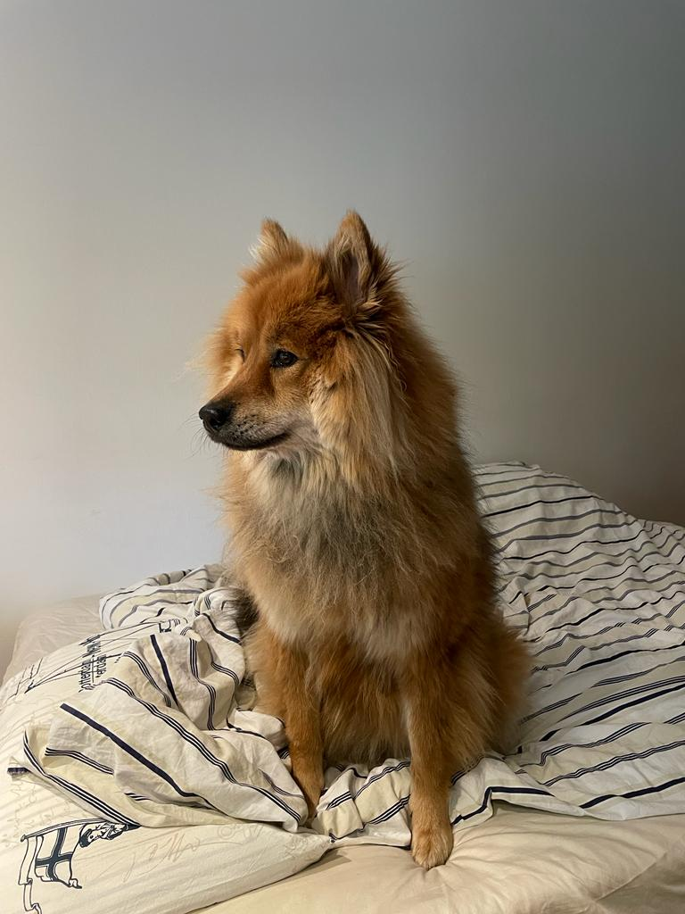

Donna on 3 vuotta vanha Eurasier, jonka syntymäpäivä on 4 Marraskuuta. Perheemme sai koiran vasta 22 Joulukuutta, tämä oli nopeammin kuin yleensä. Saimme koiran nopeutettulla aikataululla, koska kennelin omistajat halusivat rauhallisen joulun ja perheemme tietenkin toivoimme että koira olisi meidän kanssa vietämässä joulua. Donna on energinen koira joka tykkää viettää aikaa perheen kanssa, mutta hän on hyvin varautunut vieraiden kanssa. Valitismme Eurasier koira rodun koska netti ja kasvattajat mainitsivat kuinka hiljaisia eurasierit ovat. Omani kokemukseni mukaan on kyllä vaikea uskoa tätä, koska meidän koira haukkuu aivan liian usein. Onneksi muuten koira on sopeutunut perheemme elämään tyyliin esim menemme usein kesällä veneellä purhehtimaan ja koiramme rakastaa sitä.
